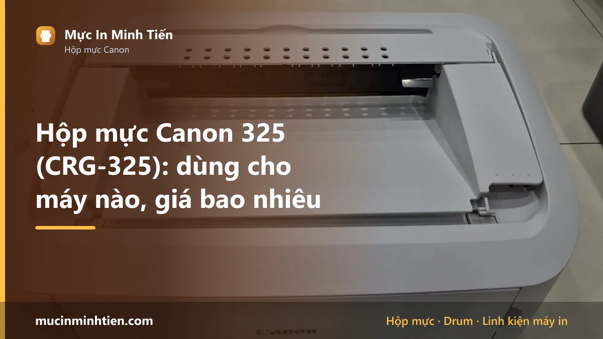
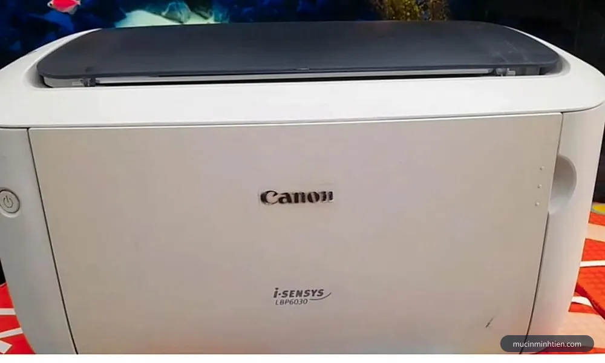
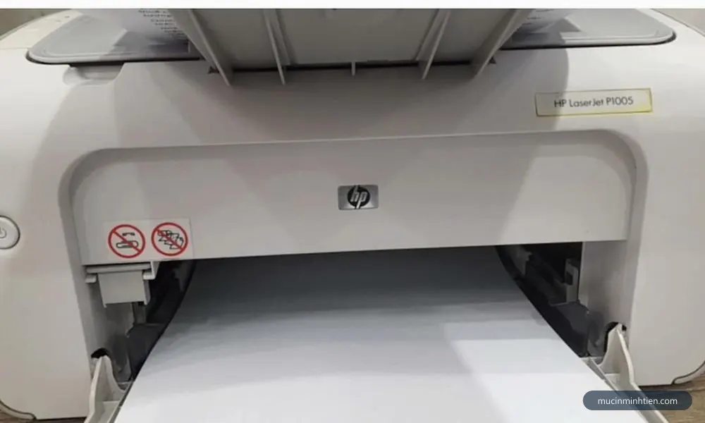
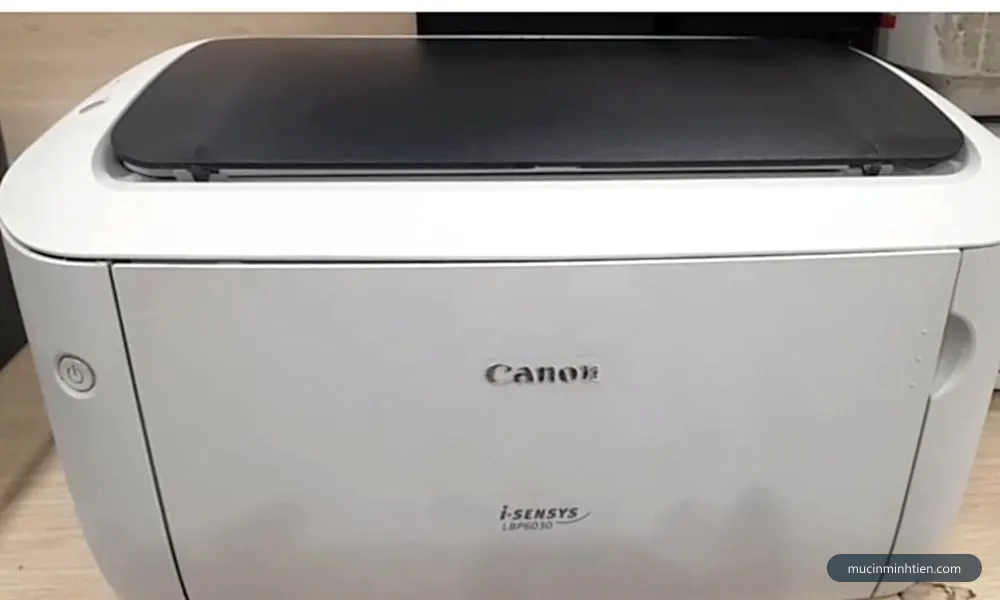
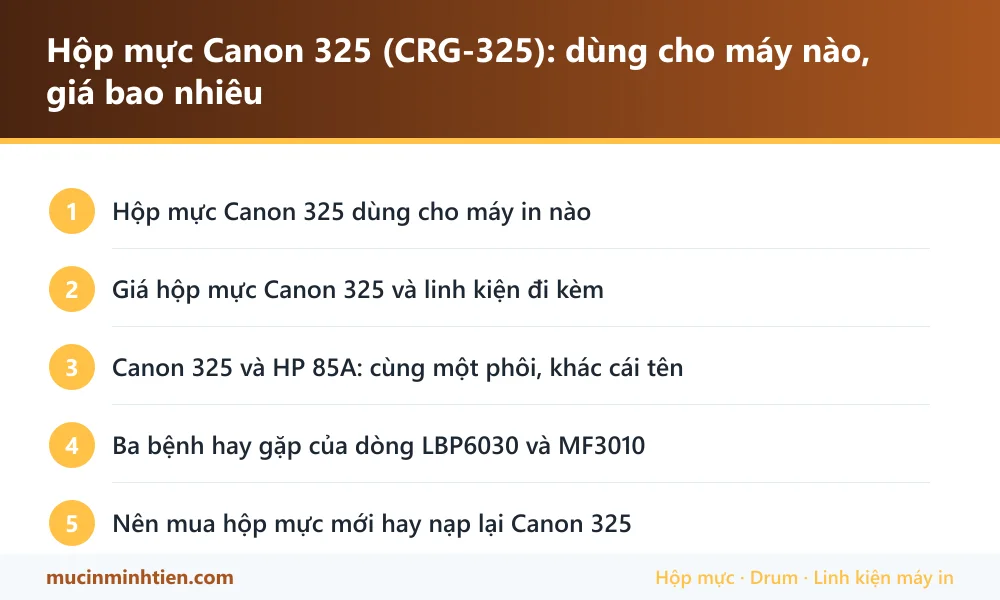

Hộp mực Canon 325 (CRG-325): dùng cho máy nào, giá bao nhiêu

Hộp mực Canon 325, còn ghi là CRG-325 hoặc Cartridge 325, dùng cho Canon LBP6000, LBP6018, LBP6030, LBP6030w và MF3010, in khoảng 1.600 trang ở độ phủ 5%. Điểm cần biết nhất khi mua: mã này dùng chung phôi với HP 85A (CE285A), nên gần như toàn bộ linh kiện rời của 85A lắp vừa — đó là lý do vật tư cho dòng máy này vừa rẻ vừa sẵn.
Hộp mực Canon 325 dùng cho máy in nào
| Dòng máy | Model cụ thể | Ghi chú |
|---|---|---|
| Canon LBP | LBP6000, LBP6000B, LBP6018, LBP6018L, LBP6018w | Dòng máy in đen trắng nhỏ gọn, rất phổ biến cho hộ gia đình |
| Canon LBP | LBP6020, LBP6020B, LBP6030, LBP6030w, LBP6030B | Đời kế tiếp cùng khung, dùng chung mã mực |
| Canon imageCLASS MF | MF3010 | Bản đa năng có scan và copy, cùng hộp mực |
| HP LaserJet Pro (dùng chung phôi) | P1102, P1102w, M1132, M1212nf, M1214, M1217 | Đây là nhóm máy dùng mã HP 85A — cùng phôi nên linh kiện rời lắp chéo được |

Giá hộp mực Canon 325 và linh kiện đi kèm
Bảng dưới là hàng đang có tại kho 77 Bắc Hải, Phường Diên Hồng, TP.HCM, giá tham khảo cho khách lẻ. Đây là giá thật trong bảng giá công khai, không phải giá quảng cáo.
| Sản phẩm | Nhóm | Giá tham khảo |
|---|---|---|
| Bộ 5 chíp Hp 85a, Canon 325, cho HP 1102w, 1132, 1212, m1212nf, p1102, Canon LBP 6000, 6030 - chíp 85A | Linh kiện khác | 50.000 đ |
| Combo 5 Trục sạc 35A-85A-83A-78A-36A - sạc 35A | Linh kiện khác | 80.000 đ |
| COMBO 5 cây Trục từ 35A-36A-85A-78A-83A-1005-1006-1505 - từ 35A | Trục từ | 80.000 đ |
| combo 5 Chip U9A1 Đa Năng chip cho HP CB435A/CB436A/CE285A/CE278A/CE505A/CF280A/CE255A/CC364A - Chip U9A1 Đa Năng chip cho HP CB435A/CB436A | Chip & Seal | 75.000 đ |
| Combo 5 Gạt nhỏ HP 35A/85A/36A/78A/83A/79A CA 328/337 - Gạt nhỏ 35A | Gạt mực | 30.000 đ |
| Combo 5 Gạt lớn HP 35A/85A/36A/78A/83A/79A CA 328/337 - Gạt lớn 35A | Gạt mực | 40.000 đ |
| Gạt lớn+nhỏ 35A-85A-78A-83A-5cặp - Gạt lớn+gạt nhỏ 35A | Gạt mực | 75.000 đ |
| Mực In Laser 85A-35A cho máy Canon 6030, 6030W, HP 1102, 1102W, 1132MFP, 1212MFP - Mực laser 85 | Hộp mực & mực in máy in | 119.000 đ |
| Hộp mực HP 85A (CE285A) chính hãng — Minh Tiến | Hộp mực & mực in máy in | 180.000 đ |
| Hộp mực in RT 85A / HP 1102, M1132, M1212NF, Canon 325 - RT 85A | Hộp mực & mực in máy in | 250.000 đ |
| Nhông lô ép HP 1102/1006/85A (nhông xéo) - Nhông lô ép 1102 | Lô sấy, lô ép & linh kiện sấy | 50.000 đ |
| Lô ép 1102 - 85A - 78A - 83A - 79A Canon 6200 / 6230 ( màu cam ) - Lô ép 85A | Lô sấy, lô ép & linh kiện sấy | 110.000 đ |
| Lô ép 1102 - 85A - 78A - 83A - 79A Canon 6200 / 6230( MÀU ĐEN) - Lô ép 85A đen | Lô sấy, lô ép & linh kiện sấy | 110.000 đ |
| Quả đào tách giấy 35A/85A/36A HP P1005/1102 - Quả đào 35A/85A/36A | Giấy in & Ruy băng | 25.000 đ |
Không thấy mã cần tìm? Dùng công cụ tra cứu theo model máy hoặc xem bảng giá đầy đủ 773 mã.

Canon 325 và HP 85A: cùng một phôi, khác cái tên
Đây là điều đáng biết nhất khi mua vật tư cho dòng máy này, và cũng là điều hay khiến người mua bối rối vì mỗi nơi gọi một kiểu.
Canon và HP dùng chung thiết kế phôi hộp mực cho nhóm máy này. Canon gọi là 325 hoặc CRG-325, HP gọi là 85A hoặc CE285A, ở một số thị trường Canon còn ghi 725. Bên trong là cùng bộ phận: drum, trục từ, trục sạc, gạt lớn, gạt nhỏ đều lắp chéo được.
Hệ quả thực tế rất có lợi cho người dùng:
- Linh kiện rời luôn sẵn vì phục vụ hai hệ máy cùng lúc, giá vì thế cũng rẻ.
- Đi mua nói mã nào cũng được hiểu, miễn là kèm tên model máy.
- Thợ nạp mực quen tay với phôi này nên công nạp thấp và ít rủi ro.
Bảng giá bên dưới liệt kê chung vật tư cho cả hai mã vì chúng thật sự dùng chung. Trang riêng cho mã HP là hộp mực 85A.
Ba bệnh hay gặp của dòng LBP6030 và MF3010
Đây là dòng máy bền, ít hỏng vặt, nhưng có ba bệnh xuất hiện gần như theo tuổi máy.
Bản in mờ dần rồi nhạt hẳn. Hộp mực nạp lại nhiều lần thì trục từ mất khả năng hút mực đều. Lắc ngang hộp mực thấy đỡ được vài chục trang rồi lại mờ chính là dấu hiệu này. Thay trục từ rẻ hơn nhiều so với thay hộp.
Sọc đen dọc hoặc lem mực. Gạt mực mòn để mực thừa lọt qua. Trên phôi 85A có hai lưỡi gạt lớn và nhỏ, cả hai đều bán rời và nên thay cùng lúc khi nạp. Cách nhận bệnh theo hình dạng vệt có ở bài máy in bị sọc đen dọc.
Kẹt giấy và kéo lệch. Quả đào tách giấy chai sau vài năm. Linh kiện này rất rẻ và thay nhanh, chi tiết ở bài máy in không kéo giấy.

Nên mua hộp mực mới hay nạp lại Canon 325
Với Canon 325, nạp lại là phương án kinh tế rõ rệt vì linh kiện rời của phôi 85A rất sẵn và rẻ. Nguyên tắc để nạp bền: hai tới ba lần nạp thì thay ruột gồm drum và gạt, và luôn dùng đúng chủng loại mực bột cho phôi này. Nạp bằng mực trôi nổi sai kích thước hạt sẽ mài mòn gạt và trục từ, và bản in sẽ mờ hoặc sọc chỉ sau vài trăm trang.
Nên mua hộp mới khi hộp cũ đã nạp từ bốn lần trở lên, vỏ rơ hoặc nứt làm mực rỉ ra khoang máy. Khi đó chi phí sửa cộng dồn đã xấp xỉ giá một hộp dựng mới.

Câu hỏi thường gặp về hộp mực Canon 325
Hộp mực Canon 325 và HP 85A có thay cho nhau được không?
Canon 325 in được bao nhiêu trang?
Máy Canon LBP6030 in mờ thì thay gì trước?
Canon MF3010 có dùng chung hộp mực với LBP6030 không?
Nạp mực Canon 325 giá bao nhiêu?
Mua hộp mực mới hay hộp dựng lại thì hợp lý hơn?
Bài viết liên quan
- Hộp mực 85A (CE285A): dùng cho máy nào, giá bao nhiêu
- Máy in bị sọc đen dọc: 5 nguyên nhân và cách khắc phục
- Máy in không kéo giấy: 6 nguyên nhân và cách khắc phục
- Cách chọn mực in đúng máy, bền máy và tiết kiệm
- Hộp mực Epson 003: dùng cho máy nào, giá bao nhiêu
- Hộp mực TN-2380: dùng cho máy nào, giá bao nhiêu
- Tra hộp mực và linh kiện theo model máy in
- Nạp mực máy in tận nơi TP.HCM từ 80.000đ